最愛的運動是 籃球，有在關注 NBA，最喜歡的球隊是 波士頓凱爾特人（塞爾提克），我有一件 JT 的球衣
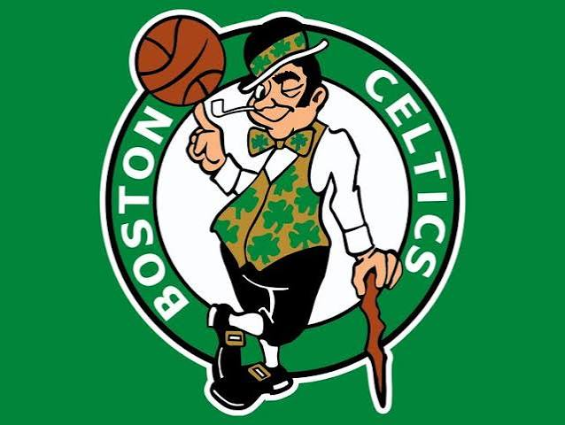
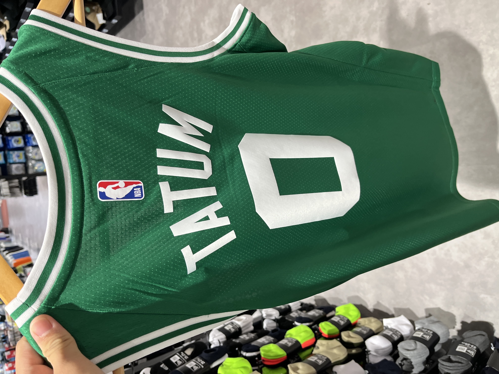
我最喜歡的球員，也是我的 GOAT，是 LeBron James
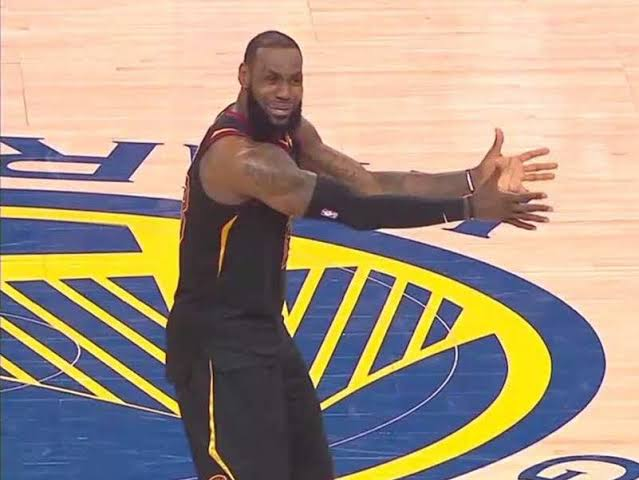
除了數學，天文學大概是我最感興趣的領域了。事實上我從小學就對天文學很有興趣了，甚至打算過大學去讀天文學，但後來發現數學更有意思。另外，我相信地外生命的存在。
雖然我是個數學學生，但我對歷史這樣的人文學科也很有興趣。中國歷史的話對明清和近現代比較有了解，當然還有三國。我也對日本的戰國時代和近現代有興趣，歐美的近現代史也是我的涉獵範圍之一。
另外，政治、社會、宗教等領域也是我感興趣的領域。
我最愛的動漫是 無職轉生，最喜歡的角色是 洛琪希（洛神）。
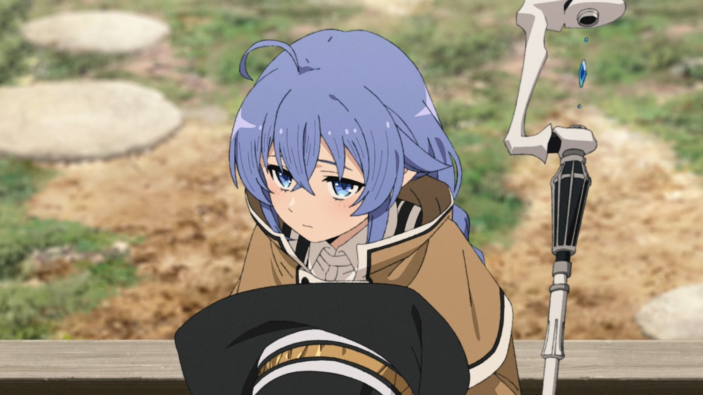
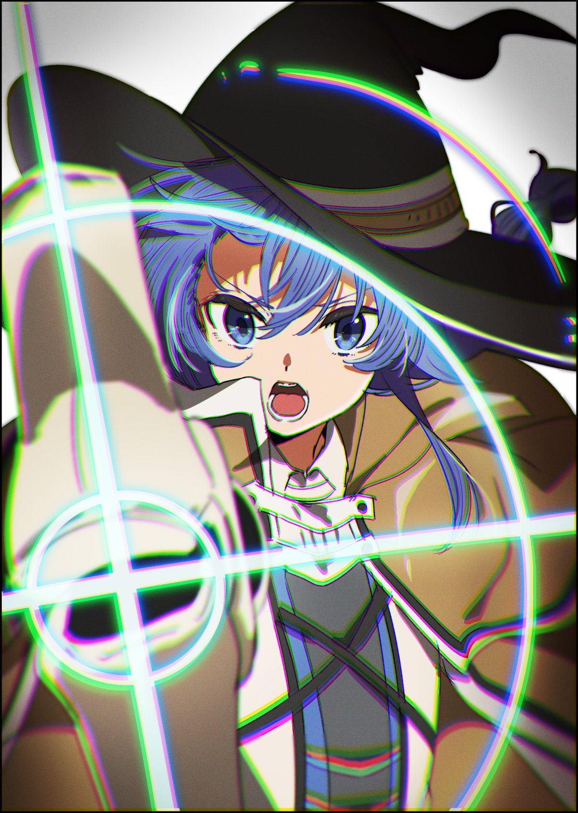
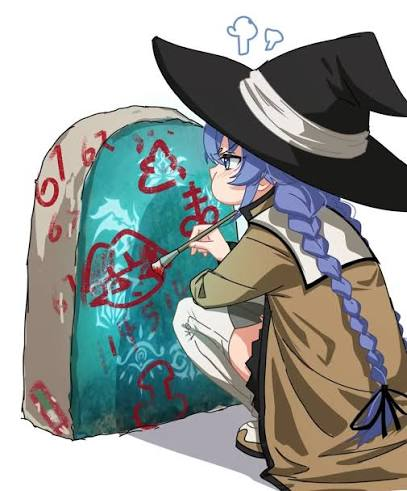
另一個很喜歡的動漫角色是EVA裏的 明日香 。
あんたバカァ？
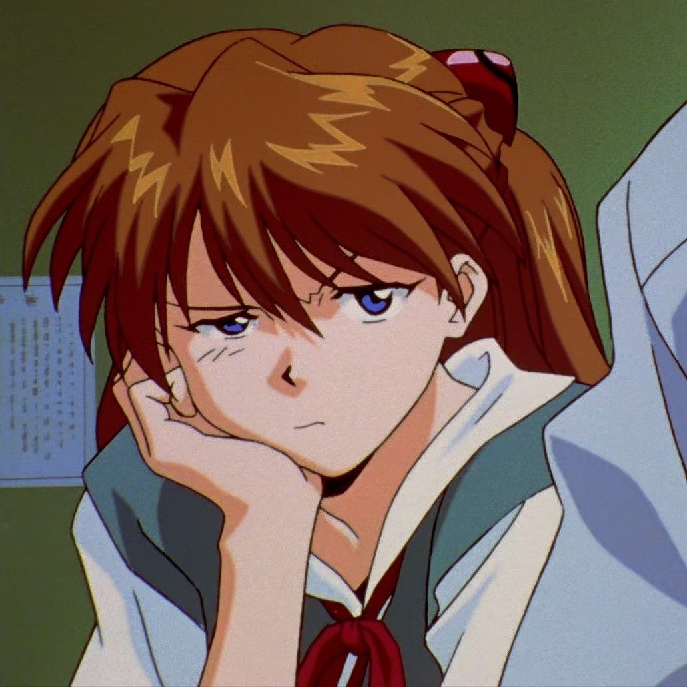
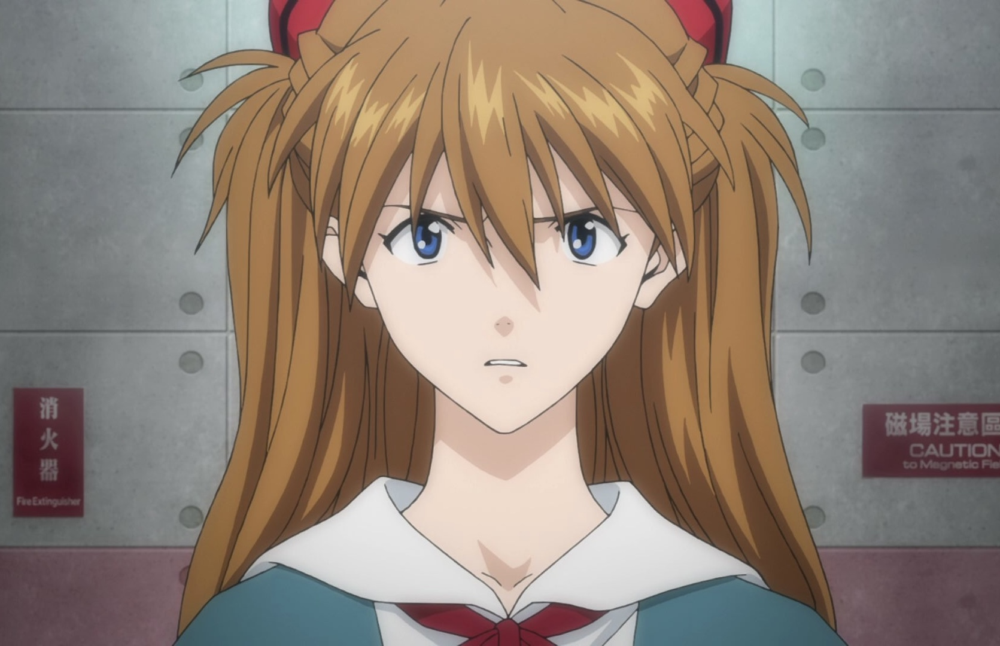
最喜歡的歌手是 宇多田ヒカル（宇多田光），大概是因為她是EVA新劇場版的主題的創作者。
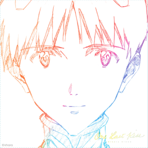
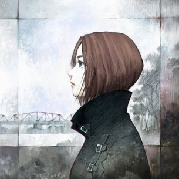
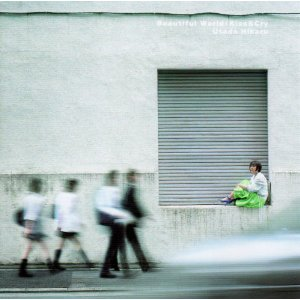
其他我會聽的歌手有：羊文学(Hitsujibungaku)、張敬軒、Shawn Mendes、Taylor Swift 等等
另外，坂本龍一(Sakamoto Ryuchi) 是我最喜歡的作曲家，「末代皇帝」的主題曲是我最愛的。
我最愛的小說是 J.R.R Tolkien 的中土世界系列，有「精靈寶鑽」、「魔戒」、「哈比人」、「剛多林的陷落」等。
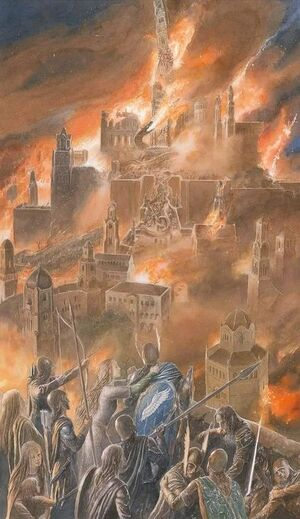